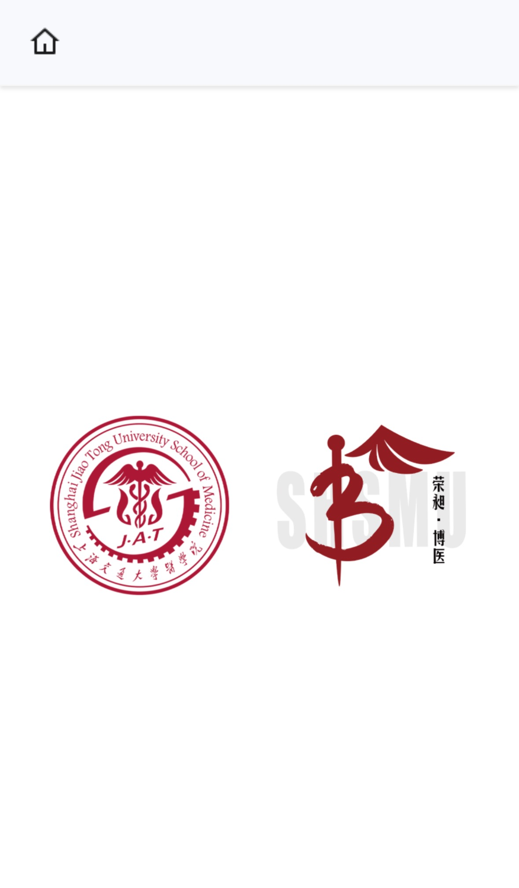

包子纪
烤肉与早餐是相通的。东北小吃店的牛肉包子从来不会像上海的这样巧立名目，永远都是墙上用粗陋的A4纸上印着几个大字：牛肉包子xx元、猪肉包子xx元、韭菜鸡蛋xx元；上海的一般都是LED灯箱，上面展板上印着一个皮薄馅大的包子，找了半天才能从“低价促销”“独家秘方”“绝对正宗”里找出价钱来，而且一般贵得多。
PROFILE / 2026
Jiayu Zhang

上海交通大学医学院 · 临床医学研究兴趣：眼科学、风湿免疫学、核医学与医学人文。
九院眼科科研见习，正参与一项大学生创新训练项目。
参与博医计划相关实践与网站建设，筹建 Medtrix 社团。
正在探索多 Agent 协作在科研工作流自动化中的可行性。
RECENT UPDATES
01 / PROJECTS
产品、研究与实践 / 16 项
02 / RESEARCH INTERESTS
眼科学、风湿免疫学、核医学。关注临床问题、研究证据与转化之间的联系。
组学分析、计算方法与可复现研究。
探索多 Agent 协作在科研工作流自动化中的可行性。
03 / ESSAYS
片段
烤肉与早餐是相通的。东北小吃店的牛肉包子从来不会像上海的这样巧立名目，永远都是墙上用粗陋的A4纸上印着几个大字：牛肉包子xx元、猪肉包子xx元、韭菜鸡蛋xx元；上海的一般都是LED灯箱，上面展板上印着一个皮薄馅大的包子，找了半天才能从“低价促销”“独家秘方”“绝对正宗”里找出价钱来，而且一般贵得多。
顶层设计要求构建服务型政府，老百姓要求政府为自己提供服务，但是政府又不按服务业水平给员工开工资。这是个悖论。
04 / CURRENT READING
05 / EXPERIENCE
九院眼科科研见习，正参与一项大学生创新训练项目。研究兴趣包括眼科学、风湿免疫学与核医学；开展医学语言学与符号学阅读与写作。
Medstack 个人工作台、Poseidon 助手、每日提醒与文献自动化工作流；山海有回声、PATH·医途配方及六安宣教原型等网站。探索多 Agent 科研工作流自动化。
团委科创中心科普实践部项目组长。正在推进“慧眼医+X青创工作室”沙龙工作。曾任班级文体委员与边界哲学社干事；参与 PRP 项目及国家安全主题定向越野组委工作。
参与博医计划相关实践与内容建设，维护山海有回声及相关互动网站。Medtrix 社团筹建中。
曾参与交大民乐团弦乐声部，随团参加“古月照今，交辉合鸣”与“百卅交辉”音乐会；曾随医学院队参与交大足球新生杯。
使用 Python、Git、React 与 FastAPI 完成项目实践；使用 Zotero 管理文献，持续学习 R、生物信息学与可复现分析。